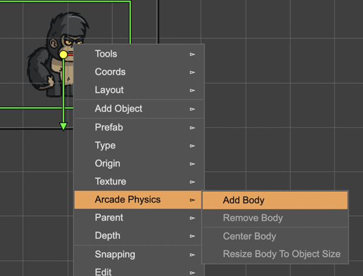
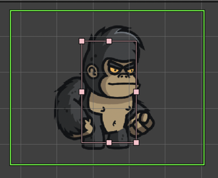
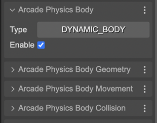

Enabling the Arcade physics on a game object
You can enable an Arcade physics body in any game object:
Select the object and open the context menu.
In the Arcade Physics menu, select the Add Body option.
Press the
Bkey for editing the body’s offset & size:Or edit any other body’s property in the Inspector view:

You can remove the body of the object. In the same Arcade Physics, select the Remove Body option. This option is only available if the selected object is not a built-in Arcade Image or Arcade Sprite object.
When you add a physics body to the object, the code for creating the object is generated like this:
const gorilla = this.add.image(379, 271, "gorilla")
as Phaser.GameObjects.Image & { body: Phaser.Physics.Arcade.Body };
this.physics.add.existing(gorilla, false);
Notice the as Phaser.GameObjects.Image & { body: Phaser.Physics.Arcade.Body } expression. It is telling to the TypeScript compiler the object created by the the image(...) method is an Image but also has an Arcade body. That annotation is required for generating valid TypeScript code.